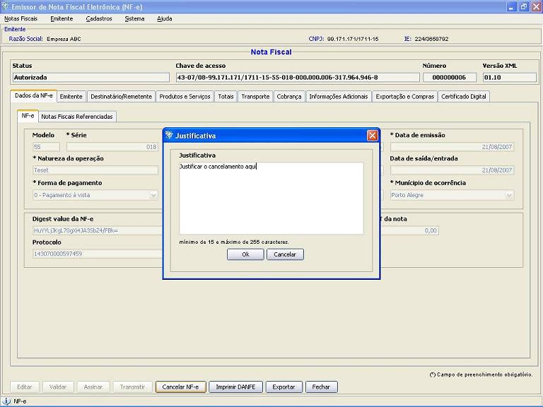

Software Emissor NF-e
Cancelando uma Nova Nota Fiscal
eletrônica (NF-e)
Após a
autorização de uma
NF-e, esta poderá ser cancelada a partir da
operação de Cancelamento de NF-e.
Apenas NF-e's autorizadas podem ser canceladas.
IMPORTANTE: a exclusão de Nota Fiscal eletrônica
pela opção Excluir
não realiza o cancelamento da NF-e.
Pré-condição:
-Um emitente
deverá estar previamente iniciado.
-Deve(m) ser selecionado(s) NF-e('s) em
situação igual a "Autorizada"
Existem duas formas para
a realização do cancelamento:
1 ) Pela tela de
Detalhamento/Edição da NF-e:
- Na tela de
detalhamento/edição de NF-e, acessar a
opção Cancelar
NF-e
- Escrever a
Justificativa para o Cancelamento (mínimo de 15 caracteres)

- Na janela de
seleção de Certificado Digital, escolher o
Arquivo (para
Certificado tipo A1), informando a senha, ou Repositório
(para Certificado tipo A3)
- Após a
seleção, clicar em Selecionar.
- O software Emissor NF-e
irá realizar a
transmissão da solicitação de
Cancelamento da NF-e
para a SEFAZ correspondente, exibindo ao final se a NF-e foi cancelada
com sucesso. Caso a NF-e foi cancelada a
situação da nota passará para
"Cancelada".
2 ) Pela tela de
Gerenciamento de NF-e's:
- Acessar o menu: Notas Fiscais -> Gerenciar
Notas
- Realizar a
pesquisa pela(s) nota(s) com situação
"Autorizada"
que será(ão) cancelada(s)
- Selecionar a(s)
nota(s) a ser(em) assinada(s) e clicar em Cancelar NF-e
- Escrever a
Justificativa para o Cancelamento (mínimo de 15 caracteres)
- Na janela de
seleção de Certificado Digital, escolher o
Arquivo (para
Certificado tipo A1), informando a senha, ou Repositório
(para Certificado tipo A3)
- Após a
seleção, clicar em Selecionar.
- O software Emissor NF-e
irá realizar a
transmissão da solicitação de
Cancelamento da NF-e para a SEFAZ
correspondente, exibindo ao final se a(s) NF-e('s) foi(ram)
cancelada(s) com sucesso.
Caso a(s) NF-e('s) foi(ram) cancelada(s) a
situação da(s) nota(s)
passará(ão) para "Cancelada".